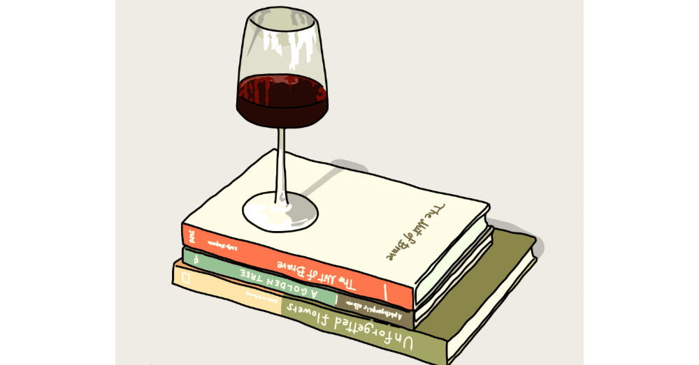

心のうちだけに秘めている、最近特にこうなってみたい人物像として、「一手先を読める人間になりたい！」というものがある。
こう書くと少々大げさなようにも思えるが、時代の寵児や唯一無二のカリスマ性を放つ人たちはきっと、少し先の未来を予測して動いてきた人種なのではないか、と思ってもいるからだ。
実のところ、「一日でも早く、そうした人たちになりたい！」というよりかは、「このままだと将来的に自分が困る」「今のうちにあの人に好かれておこう」など、自身を取り巻く状況を少しでも快適にするくらいには、先々を読んで行動できるようになりたいわけだ。
上に書いた例だといかにも保身に走っている印象を受けたかもしれないが、自らが未来を予測しながら動くことで周囲の助けになりたいという思いもある。
チームで活動したり、複数人でことに当たる場面があれば、最悪の事態を避けるのはもちろん、よりよい結末を迎えられるように道筋を考える。実際、こうした過程を辿るのは意外と嫌じゃないかもと最近気づき、その未来予測がうまくいった日にゃ「フッ……僕は常に一手先を読んでいるのさ」と誰かに対してドヤりたい気持ちもあるにはあるのである(いや、それしかない)。
最近、気が置けない友からの勧めでチェスを始めた。
洋画や海外ドラマでも、ヨーロッパが舞台のものを好むせいか、登場人物たちがチェスに興じる場面をたびたび見てきたので、こちらも密かに憧れがあった。
チェスはどうやら将棋と似ている部分があるようだが、将棋や囲碁はもちろん、ボードゲーム全般にほとんど触れてこなかった人生だったので、手引書を確認することなくルールをしっかりと頭に入れ実際に手を動かせるようになるまでは、1ヶ月ほどの時間を要した。
しかし、これは特段チェスに限らないことだが、どうやら僕には自分なりのコツを発見すると、どんどん面白くなり熱中してしまう性質があるらしい。気づけば、スキマ時間があると自然にスマートフォン内のチェスアプリを起動し、顔の知らない人と対局できるオンライン対戦にまで参戦するようになってしまった。今では、チェス歴20年の友との手合わせも、毎度熱い勝負を繰り広げられるようになっている。
一手先を読むことの重要性は、別にチェスだけに留まらない。
ここからは非常に個人的な話ではあるが、本noteアカウントの記事は予約投稿している関係で実際の執筆時期とタイムラグがある。以前は1～2ヶ月程度であったが、最近は特に予約投稿数が多くなっている。
このエッセイを書いているのも4月某日。多分これが投稿されているのが7月頭。実に3ヶ月ほど離れている。
3ヶ月というと、季節をひとつ跨いでいるくらいの時間差だ。まだぎりぎり桜が散っていない今、恐らく梅雨が明けてうんざりするほどの夏の暑さに嫌気が差し始めている頃を細々と予測して書くことは、僕にとって実に難しい作業なのである。
「じゃあさ、この際一年先まで書き貯めて、季節を合わせりゃいいんじゃね？」
ワイン片手にチェスを打つ友に相談すると、そんな回答が返ってきた。
普段は何も考えていないように見える人間だが、ことチェスにおいては強者と言わざるを得ない。僕がまあまあ深刻に悩んでいる本問題について対局中に尋ねたのは、思考が冴えわたっている時であれば、よりよい答えを望めるのではないかとも思ったからだ。
また、俯き加減で悩みを打ち明ければ、親身な友なら盤面の状況など差し置いて一緒に悩んでくれるのではないか。そして、願わくば、その隙をついて念願の一勝をもぎ取れるのではないか。友には悪いが、そうした思惑もあったのである。
(「フッ……」)我ながら策士だなと自画自賛しながらも、その回答には膝を打った。
一年書き貯めるというのは確かに大変なことだが、毎週一記事でも多くストックを貯め続けていけば、来年の今頃には一年先まで予約投稿ができていることだろう。
コツコツと積み重ねるのが比較的得意な僕の性質を見抜いてアドバイスしているのだとすれば中々侮れないが、手のうちをお互い見せ合った上で戦える友は、やはりよきライバルだと改めて認識させられた。
「……その手があったか！」
ワンテンポ置いてそう言うと、友は朗らかな笑みを浮かべる。そして、その指先は軽やかにクイーンを動かしていた。そして、言った。
「“チェックメイト”」